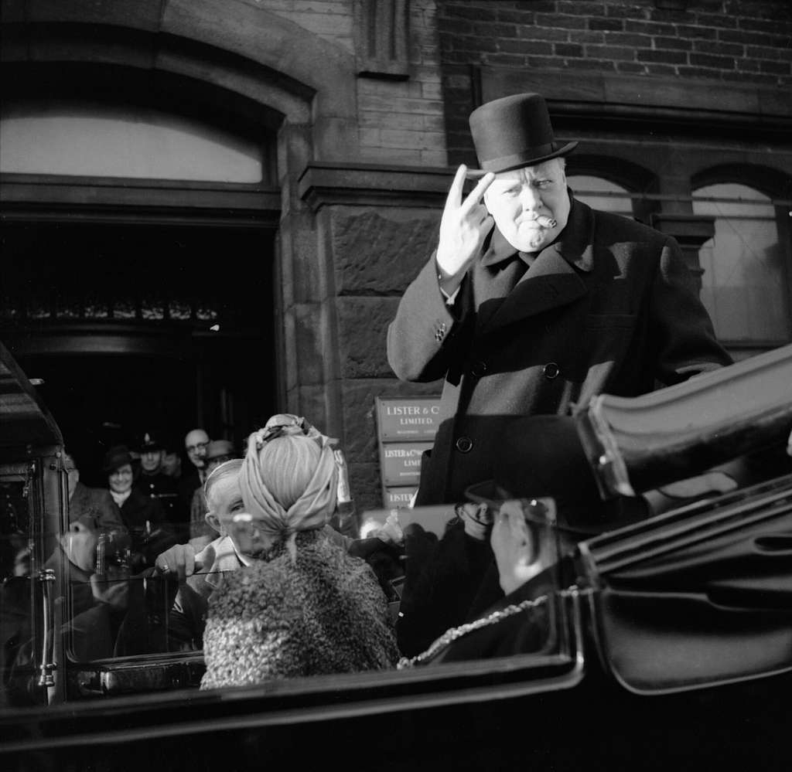

Nom : Winston Leonard Spencer Churchill
Dates : 30 novembre 1874 – 24 janvier 1965
Nationalité : Britannique
Churchill devient Premier ministre en mai 1940, au moment où la France s’effondre. Il refuse toute négociation avec Hitler et galvanise la population britannique durant le Blitz. Il coordonne l’effort de guerre, renforce l’alliance avec les États‑Unis et participe aux grandes conférences alliées (Téhéran, Yalta, Potsdam).
Churchill est considéré comme l’un des dirigeants les plus influents du XXe siècle. Son leadership, sa vision stratégique et sa capacité à maintenir le moral d’un pays isolé face à l’Allemagne nazie ont été déterminants dans la survie du Royaume‑Uni et dans la victoire alliée.